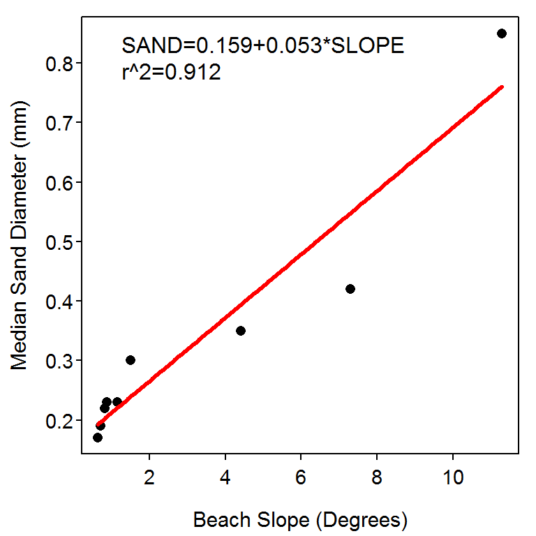

Beach Sand
 Geologists examined the relationship between the median diameter (mm) of sand granules and the slope (degrees) for nine ocean beaches. Their primary interest was in determining if the variability in sand granule size could be explained by the slope of the beach. The results of their analysis is shown in the scatterplot below.
Geologists examined the relationship between the median diameter (mm) of sand granules and the slope (degrees) for nine ocean beaches. Their primary interest was in determining if the variability in sand granule size could be explained by the slope of the beach. The results of their analysis is shown in the scatterplot below.

Use these results to answer the questions below.
- In terms of the variables of this problem, what is the equation of the best-fit line?
- In terms of the variables of this problem, INTERPRET the value of the slope?
- In terms of the variables of this problem, INTERPRET the value of the y-intercept?
- What is the predicted median sand diameter for a beach slope of 15o?
- What is the predicted median sand diameter for a beach slope of 4o?
- What is the residual if the beach slope is 5o and the median sand diameter is 0.2 mm?
- What is the correlation coefficient between median sand diameter and the beach slope?
- What proportion of the variability in median sand diameter is explained by knowing the beach slope?
- What aspect of this regression analysis concerns you (i.e., consider the regression assumptions)?